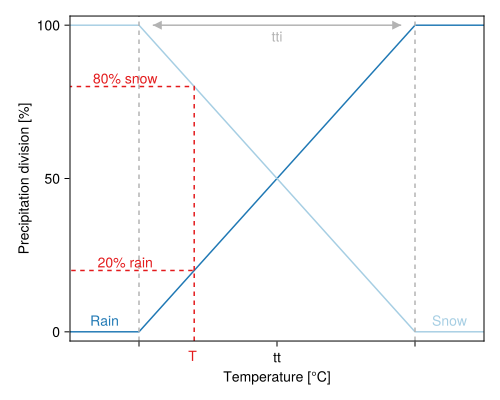
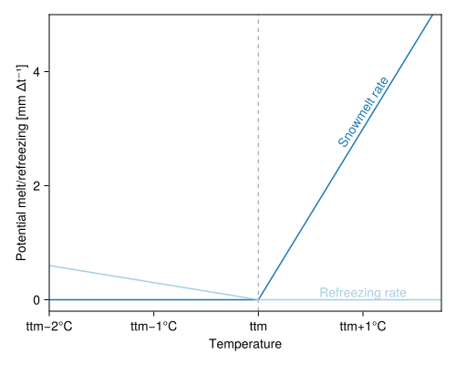
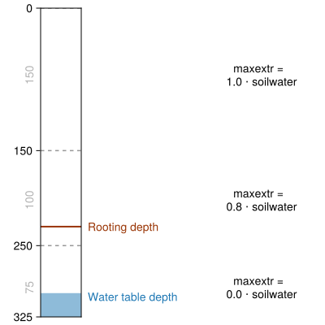
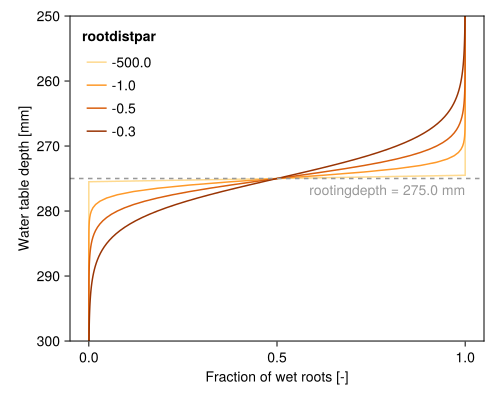
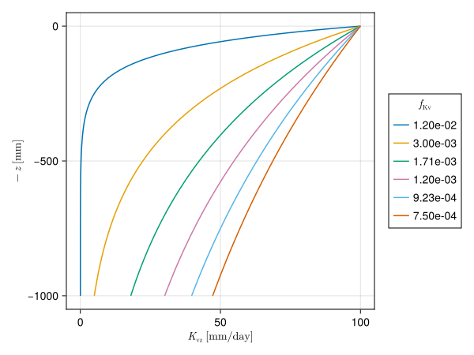
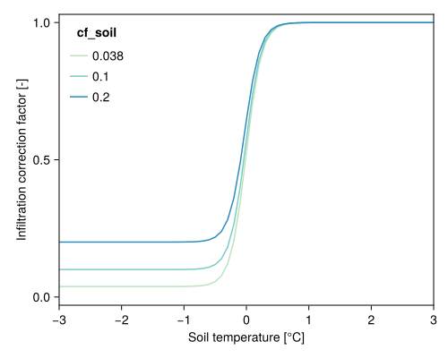

The Land Hydrology SBM model is largely based on Topog_SBM (Vertessy and Elsenbeer, 1999), which considers the soil to be a “bucket” with a saturated and unsaturated store. The main differences between the Land Hydrology SBM model and Topog_SBM are as follows:
the addition of evapotranspiration and interception losses;
the addition of a root water uptake reduction function (Feddes et al., 1978);
the addition of a capillary rise;
the addition of glacier, snow build-up and melting processes;
the introduction of an option to divide the soil column into different layers to allow for transfer of water within the unsaturated zone;
the addition of water demand and allocation computations.
The Land Hydrology SBM model contains besides a SBMsoil model (including evapotranspiration), models for interception, snow, glacier , water demand and allocation. The sections below describe the working of the Land Hydrology SBM model in more detail.
Rainfall interception
Two different interception models are available: the Gash model, and the modified Rutter model. The simulation timestep defines which interception model is used, where daily (or larger) timesteps use the Gash model, and timesteps smaller than daily use the modified Rutter model.
The Gash model
The Gash interception model (Gash, 1979) can to be applied on a daily basis, although a storm-based approach will yield better results in situations with more than one storm per day. The amount of water needed to completely saturate the canopy is defined as:
where \(\overline{R}\) is the average precipitation intensity on a saturated canopy and \(\overline{E}_{w}\) the average evaporation from the wet canopy and with the vegetation parameters \(S\), \(p\) and \(p_t\) as defined previously. The model uses a series of expressions to calculate the interception loss during different phases of a storm. An analytical integration of the total evaporation and rainfall under saturated canopy conditions is performed for each storm to determine average values of \(\overline{E}_{w}\) and \(\overline{R}\). The total evaporation from the canopy (the total interception loss) is calculated as the sum of the components listed in the table below. Interception losses from the stems are calculated for days with \(P\geq S_{t}/p_{t}\). \(p_t\) and \(S_t\) are small and neglected.
Formulation of the components of interception loss according to Gash:
Components
Interception loss
For \(m\) small storms (\(P_{g}<{P'}_{g}\))
\((1-p-p_{t})\sum_{j=1}^{m}P_{g,j}\)
Wetting up the canopy in \(n\) large storms (\(P_{g}\geq{P'}_{g}\))
Evaporation after rainfall ceases for \(n\) large storms
\(nS\)
Evaporation from trunks in \(q\) storms that fill the trunk storage
\(qS_{t}\)
Evaporation from trunks in \(m+n-q\) storms that do not fill the trunk storage
\(p_{t}\sum_{j=1}^{m+n-q}P_{g,j}\)
Saturated conditions are assumed to occur when the hourly rainfall exceeds a certain threshold. Often a threshold of \(\SI{0.5}{mm\ h^{-1}}\) is used. \(\overline{R}\) is calculated for all hours when the rainfall exceeds the threshold to give an estimate of the mean rainfall rate onto a saturated canopy.
Gash (1979) has shown that in a regression of interception loss on rainfall (on a storm basis) the regression coefficient should equal to \(\overline{E}_w/\overline{R}\). Assuming that neither \(\overline{E}_w\) nor \(\overline{R}\) vary considerably in time, \(\overline{E}_w\) can be estimated in this way from \(\overline{R}\) in the absence of above-canopy climatic observations. Values derived in this way generally tend to be (much) higher than those calculated with the penman-monteith equation.
The modified rutter model
For sub daily timesteps the interception is calculated using a simplification of the Rutter model. The simplified model is solved explicitly and does not take drainage from the canopy into account. The stemflow fraction is defined as a fixed fraction (0.1) of canopy gap fraction \(\SIb{f_\mathrm{canopygap}}{-}\) limited by the canopy fraction \((1-f_\mathrm{canopygap})\) and the amount of stemflow is taken as the stemflow fraction of precipitation. Throughfall equals to the amount of water that cannot be stored by the canopy, plus the rainfall that is not captured by the canopy. Water can evaporate from the canopy storage, taken as the minimum between potential evaporation and the current storage. The “left-over” potential evaporation (if any) is returned as output.
Interception parameters from LAI
The SBM concept can determine the interception parameters from leaf area index (\(\SIb{\mathrm{LAI}}{m^2 m^{-2}}\)) climatology. In order to switch this on you must define this cyclic parameter in the TOML file, the parameter is read from path_static, as follows:
Furthermore, these additional parameters are required:
Specific leaf storage (\(\SIb{S_\mathrm{leaf}}{mm}\))
Storage woody part of vegetation (\(\SIb{S_\mathrm{wood, max}}{mm}\))
Extinction coefficient (\(\SIb{k}{-}\))
Here it is assumed that the canopy storage capacity for the leaves \(\SIb{S_\mathrm{leaf, max}}{mm}\) relates linearly with \(\mathrm{LAI}\) (c.f. Van Dijk and Bruijnzeel 2001). This is done via the specific leaf storage \(S_\mathrm{leaf}\), a parameter that can be determined through a lookup table with land cover based on literature (Pitman 1989, Lui 1998). Next \(S_\mathrm{leaf, max}\) is determined using:
To get to total storage \(\SIb{S_\mathrm{canopy, max}}{mm}\) the woody part of the vegetation also needs to be added. As for \(S_\mathrm{leaf}\), the storage of the woody part \(S_\mathrm{wood, max}\) can also be related to land cover (lookup table).
The canopy gap fraction \(\SIb{f_\mathrm{canopygap}}{-}\) is determined using the extinction coefficient \(k\) (van Dijk and Bruijnzeel 2001):
The extinction coefficient \(k\) can be related to land cover.
Snow and glaciers
Both options can be enabled by specifying the following in the TOML file:
[model]snow=trueglacier=true
Snow modelling
Snow processes are adopted from the HBV-96 hydrological model concept (Bergström, 1992). If the air temperature, \(T_\mathrm{air}\), is below a user-defined threshold \(s_\mathrm{fall, T threshold}\)\(\SIb{}{\degree C}\) effective precipitation (throughfall and stemflow) occurs as snowfall, whereas it occurs as rainfall if \(T_\mathrm{air} ≥ s_\mathrm{fall, T threshold}\). Another parameter \(s_\mathrm{fall, T interval}\)\(\SIb{}{\degree C}\) defines how precipitation can occur partly as rain or snowfall.
Code
usingCairoMakieusingMakieExtralet# Define colors crain ="#1f78b4" csnow ="#a6cee3" cttint ="#b3b3b3" cread ="#e31a1c"# Create figureset_theme!() fig =Figure(size=(500,400)) ax =Axis( fig[1, 1]; xgridvisible =false, ygridvisible =false, xlabel ="Temperature [°C]", ylabel ="Precipitation division [%]", )# Plot lineslines!(ax, [-0.25, 0, 1, 1.25], [0, 0, 100, 100]; color = crain)lines!(ax, [-0.25, 0, 1, 1.25], [100, 100, 0, 0]; color = csnow)# Add legend texttext!(ax, "Rain"; position = (-0.125, 1), color = crain, align = (:center, :bottom))text!(ax, "Snow"; position = (1.125, 1), color = csnow, align = (:center, :bottom))# Format axes ax.xticks = ([0, 0.5, 1], ["", "tt", ""])xlims!(ax, -0.25, 1.25)ylims!(ax, -3, 103)# Add arrow and text indicating ttintvlines!(ax, [0, 1]; color = cttint, linestyle =:dash)text!(ax, "tti"; position = (0.5, 99), color = cttint, align = (:center, :top))arrowlines!(ax, Point2f(0.05, 0.95), Point2f(100, 100); color = cttint, arrowstyle ="<|-|>")# Add lines showing how to read graphlines!(ax, [0.2, 0.2, -0.25], [-3, 20, 20]; color = cread, linestyle =:dash)lines!(ax, [0.2, 0.2, -0.25], [20, 80, 80]; color = cread, linestyle =:dash)text!(ax, "20% rain"; position = (-0.05, 20), color = cread, align = (:center, :bottom))text!(ax, "80% snow"; position = (-0.05, 80), color = cread, align = (:center, :bottom))text!( fig.scene,Point2f(0.385, 0.09); text ="T", space =:relative, color = cread, align = (:center, :bottom), )# Display figure figend
Precompiling CairoMakie...
11672.5 ms ✓ Parsers
1220.9 ms ✓ JSON
508.9 ms ✓ ColorBrewer
132783.0 ms ✓ Makie
41422.6 ms ✓ CairoMakie
5 dependencies successfully precompiled in 188 seconds. 264 already precompiled.
Precompiling MakieExtra...
5799.0 ms ✓ Skipper → MakieExt
14274.6 ms ✓ MakieExtra
2 dependencies successfully precompiled in 20 seconds. 310 already precompiled.

Division between snow and precipitation based on the threshold temperature
If precipitation occurs as snowfall, it is added to the dry snow component within the snow pack. Otherwise it ends up in the free water reservoir, which represents the liquid water content of the snow pack. Between the two components of the snow pack, interactions take place, either through snow melt (if temperatures are above a threshold \(\SIb{s_\mathrm{melt, T threshold}}{\degree C}\)) or through snow refreezing (if temperatures are below threshold \(s_\mathrm{melt, T threshold}\)).
The potential snowmelt rate \(\SIb{M_\mathrm{snow, pot}}{mm\ t^{-1}}\), using the degree-day factor \(\SIb{s_\mathrm{ddf}}{mm\ \degree C^{-1}\ t^{-1}}\), is calculated as follows:
\[
M_\mathrm{snow, pot}=\begin{cases}
s_\mathrm{ddf} (T_\mathrm{air}-s_\mathrm{melt, T threshold}) & \text{if $T_\mathrm{air}>s_\mathrm{melt, T threshold}$}\\
0 & \text{otherwise}.
\end{cases}
\]
The actual snowmelt rate is limited by the snow storage.
The snowpack retains water that can refreeze if \(T^{t}_\mathrm{air}\) is below \(s_\mathrm{melt, T threshold}\). The potential refreezing rate \(\SIb{M_\mathrm{refreeze, pot}}{mm\ t^{-1}}\), is controlled by \(s_\mathrm{ddf}\), a coefficient of refreezing \(\SIb{s_\mathrm{refreeze}}{-}\) (fixed: 0.05), \(T^{t}_\mathrm{air}\) and \(s_\mathrm{melt, T threshold}\) as follows:
\[
M_\mathrm{refreeze, pot}=\begin{cases}
s_\mathrm{ddf} s_\mathrm{refreeze} (s_\mathrm{melt, T threshold}-T^{t}_\mathrm{air}) & \text{if $T^{t}_\mathrm{air}<s_\mathrm{melt, T threshold}$}\\
0 & \text{otherwise}.
\end{cases}
\]
The actual refreezing rate is limited by the liquid water content of snow.
The fraction of liquid water in the snow pack is at most equal to a user defined fraction, \(\SIb{s_\mathrm{whc}}{-}\), of the water equivalent of the dry snow content \(\SIb{\subtext{S}{snow}}{mm}\). If the liquid water content exceeds \(s_\mathrm{whc}\), either through snow melt or incoming effective precipitation, snow runoff \(\SIb{\subtext{R}{snow}}{mm\ t^{-1}}\) becomes available for infiltration into the soil:
usingCairoMakielet# Define colors crain ="#1f78b4" csnow ="#a6cee3" cttint ="#b3b3b3" cread ="#e31a1c" cfmax =3.0 ttm =0 cfr =0.1# Create figureset_theme!() fig =Figure(size=(500, 400)) ax =Axis( fig[1, 1]; xlabel ="Temperature", ylabel ="Potential melt/refreezing [mm Δt⁻¹]", xticks = ([-2, -1, 0, 1, 2], ["ttm−2°C", "ttm−1°C", "ttm", "ttm+1°C", "ttm+2°C"]), xgridvisible =false, ygridvisible =false, )# Convert temperature to an array for element-wise operations temperature =collect(-2:0.5:2)# Calculate melt and refreezing rates melt = cfmax .* (temperature .- ttm) refr = cfmax .* cfr .* (ttm .- temperature) melt[temperature .< ttm] .=0 refr[temperature .> ttm] .=0# Plot lineslines!(ax, temperature, melt; color = crain)lines!(ax, temperature, refr; color = csnow)# Add legend texttext!( ax,"Snowmelt rate"; position = (1, melt[findfirst(x -> x ==1, temperature)] +0.3), color = crain, align = (:center, :center), rotation =1.0, )text!( ax,"Refreezing rate"; position = (1, refr[findfirst(x -> x ==1, temperature)]), color = csnow, align = (:center, :bottom), )# Add vertical line for ttmvlines!(ax, [ttm]; color = cttint, linestyle =:dash)# Set axis limitsxlims!(ax, -2, 1.75)ylims!(ax, -0.2, 5)# Display figure figend

Snowmelt and refreezing rates as a function of temperature (for set melting and refreezing factors)
Glacier modelling
Glacier processes can be modelled if the snow model is enabled. Glacier modelling is very similar to snow modelling and considers two main processes: glacier build-up from snow turning into firn/ice (using the HBV-light model) and glacier melt (using a temperature degree-day model).
The definition of glacier boundaries and initial volume is defined by two parameters. The parameter \(\SIb{\subtext{f}{glacier}}{-}\) gives the fraction of each grid cell covered by a glacier as a number between zero and one. The state parameter glacier store \(\SIb{\subtext{S}{glacier}}{mm}\) gives the amount of water (water equivalent) within the glaciers at each grid cell. A map with \(\subtext{S}{glacier}\) values can be provided as an initial state (default: \(\SI{5500}{mm}\)) when the model is initialized with default values in the code (“cold” start). The required glacier data can be prepared from available glacier datasets.
First, a fixed fraction \(\SIb{\subtext{g}{snow\ to\ ice}}{t^{-1}}\), that typically ranges between \(0.001\) and \(0.006\) for a daily time step, of snow storage \(\SIb{S_\mathrm{snow}}{mm}\) on top of the glacier is converted into ice for each time step \(t\) of length \(\Delta{t}\) [s]:
where \(\SIb{S_\mathrm{snow\ to\ ice}}{mm\ t^{-1}}\) is the snow into ice conversion rate, with a maximum conversion rate of \(\SI{8}{mm\ d^{-1}}\). This maximum conversion rate is scaled by \(\Delta{t}\), and the model base time step size \(\Delta{t_b}\) of \(\SIb{86,400}{s}\).
The snow storage from the snow module \(\SIb{\subtext{S}{snow}}{mm}\) is then updated as follows:
When the snowpack on top of the glacier is almost all melted (\(S_\mathrm{snow} < \SI{10}{mm}\)), glacier melt is enabled and estimated with a degree-day model. If the air temperature \(T_\mathrm{air}\) is above a melting temperature threshold \(\SIb{g_\mathrm{melt,T threshold}}{\degree C}\), glacier melt occurs. The potential glacier melt \(\SIb{M_\mathrm{glacier, pot}}{mm\ t^{-1}}\), using the degree-day factor \(\SIb{g_\mathrm{ddf}}{mm\ t^{-1}\ \degree C^{-1}}\), is calculated as: \[
M_\mathrm{glacier, pot}=\begin{cases}
g_\mathrm{ddf} (T_\mathrm{air}-g_\mathrm{melt, T threshold}) & \text{if $T_\mathrm{air} > g_\mathrm{melt, T threshold}$}\\
0 & \text{otherwise} .\\
\end{cases}
\]
The actual glacier melt is limited by the glacier storage. Parameter \(g_\mathrm{melt, T threshold}\) can be taken as equal to the snow \(s_\mathrm{melt, T threshold}\) parameter. Values of the melting factor \(g_\mathrm{ddf}\) normally varies from one glacier to another and some values are reported in the literature. \(g_\mathrm{ddf}\) can also be estimated by multiplying snow \(s_\mathrm{ddf}\) by a factor between \(1\) and \(2\), to take into account the higher albedo of ice compared to snow.
Evaporation
The Land Hydrology SBM model assumes the input to be potential reference evapotranspiration. A crop coefficient (set to \(1\) by default) is used to convert the potential evapotranspiration rate of a reference crop fully covering the soil to the potential evapotranspiration rate of vegetation (natural and agricultural) fully covering the soil. The crop coefficient is used for a surface completely covered by vegetation, and does not include the effect of growing stages of vegetation and soil cover. These effects are handled separately through the use of the canopy gap fraction.
It is assumed that the potential evaporation rate of intercepted water by vegetation is equal to the potential evapotranspiration rate of vegetation (fully covering the soil) multiplied by the canopy fraction. The potential evapotranspiration rate left over after interception is available for transpiration. For potential open water evaporation (river and water bodies) the potential reference evapotranspiration rate is used (multipled by the river fraction, and open water fraction). Also for potential soil evaporation the potential reference evapotranspiration rate is used, multiplied by the canopy gap fraction corrected by the sum of total water fraction (river fraction and open water fraction) and the fraction covered by a glacier.
Bare soil evaporation
If there is only one soil layer present in the SBMsoil model, the bare soil evaporation is scaled according to the wetness of the soil layer. The fraction of bare soil is assumed to be equal to the fraction not covered by the canopy gap fraction corrected by the total water fraction and glacier fraction. When the soil is fully saturated, evaporation is set to equal the potential reference evaporation. When the soil is not fully saturated, actual evaporation decreases linearly with decreasing soil moisture values, as indicated by the figure below.
Evaporation reduction as function of available soil moisture
When more soil layers are present, soil evaporation is only provided from the upper soil layer, and soil evaporation is split in evaporation from the unsaturated store and evaporation from the saturated store. Water is first evaporated from the unsaturated store. The remaining potential soil evaporation can be used for evaporation from the saturated store, but only when the water table is present in the upper soil layer. Both the evaporation from the unsaturated store and the evaporation from the saturated store are limited by the minimum of the remaining potential soil evaporation and the available water in the unsaturated/saturated zone of the upper soil layer. Also for multiple soil layers, the evaporation (both unsaturated and saturated) decreases linearly with decreasing water availability.
Transpiration
The maximum possible root water extraction rate for each soil layer is determined by partitioning the potential transpiration rate \(T_p\) based on the fraction of the total root length density fraction in each soil layer. See also the conceptual figure below.
Code
usingCairoMakieusingStatisticslet# Define colors and styles csep ="#999999" croot ="#993404" cwater ="#1f78b4" lssep =:dash layers = [0, 150, 250, 325] all_layers =copy(layers) rootdepth =230 waterdepth =300 availcap =Float64[] usl =Float64[]# Calculate available capacity and unsaturated layerfor i in1:(length(layers) -1) usl_i =min(layers[i +1], waterdepth) - layers[i]push!(usl, usl_i)if usl_i >0 cap =min(1.0, max(0.0, (rootdepth - layers[i]) / usl_i))push!(availcap, cap)elsepush!(availcap, 0.0)endend# Create figure padding =10 w, h = (400, 400) fig =Figure(; size = (w, h)) ax =Axis( fig; bbox =BBox(50, 100, padding, h - padding), xgridvisible =false, ygridvisible =false, xticksvisible =false, xticklabelsvisible =false, yticks = all_layers, yreversed =true, xlabel ="", ylabel ="", )# Show lines for different layers and depth valuesfor i in1:(length(all_layers) -1) layer = all_layers[i] y_mean =mean([all_layers[i +1], all_layers[i]])hlines!(ax, [layer]; color = csep, linestyle = lssep)text!( fig.scene,Point2f(0.09, 1- (y_mean /maximum(layers))); text =string(all_layers[i +1] - all_layers[i]), space =:relative, align = (:center, :center), rotation =pi/2, color ="#b3b3b3", )text!( fig.scene,Point2f(0.8, 1- (y_mean /maximum(layers))); text ="maxextr = \n$(round(availcap[i], digits =2)) ⋅ soilwater", space =:relative, align = (:center, :center), )end# Add lines indicating water level and rootzone depthhlines!(ax, [rootdepth]; color = croot, linewidth =2)poly!(ax, [0, 0, 1, 1], [waterdepth, 375, 375, waterdepth]; color = cwater, alpha =0.5)text!( fig.scene,"Rooting depth"; position = (0.27, 1.01- (rootdepth /maximum(layers))), color = croot, space =:relative, align = (:left, :center), )text!( fig.scene,"Water table depth"; position = (0.27, 1.01- (waterdepth /maximum(layers))), color = cwater, space =:relative, align = (:left, :center), )# Format axesxlims!(ax, 0, 1)ylims!(ax, layers[end], 0)# Display the figure figend

Conceptual overview of how maxextr depends on rooting depth and water table depth
A root water uptake reduction model is used to calculate a reduction coefficient as a function of soil water pressure, that may reduce the maximum possible root water extraction rate. The root water uptake reduction model is based on the concept proposed by Feddes et al. (1978). This concept defines a reduction coefficient \(\SIb{\alpha}{-}\) as a function of soil water pressure \(\SIb{h}{cm}\). Four different levels of \(h\) are defined: \(h_1\), \(h_2\), \(h_3\) and \(h_4\). \(h_1\) represents anoxic moisture conditions, \(h_2\) represents field capacity, \(h_3\) represents the point of critical soil moisture content (onset of drought stress), and \(h_4\) represents the wilting point. The value of \(h_3\) is a function of the potential transpiration rate, between \(\SI{1}{mm\ d^{-1}}\) and \(\SI{5}{mm\ d^{-1}}\). If \(T_p \le \SI{1}{mm\ d^{-1}}\), \(h_3\) is set equal to \(h_{3\mathrm{low}}\) (input model parameter). If \(T_p \ge \SI{5}{mm d^{-1}}\), \(h_3\) is set equal to \(h_{3\mathrm{high}}\) (input model parameter). For \(T_p\) values between \(\SI{1}{mm\ d^{-1}}\) and \(\SI{5}{mm\ d^{-1}}\), the value of \(h_3\) is linearly related to \(T_p\) (between \(h_{3\mathrm{low}}\) and \(h_{3\mathrm{high}}\)). Besides model parameters \(h_{3\mathrm{high}}\) and \(h_{3\mathrm{low}}\), the critical pressure heads \(h_1\), \(h_2\) and \(h_4\) can be defined as input to the model.
The current soil water pressure is determined following the concept defined by Brooks and Corey (1964):
where \(\SIb{h}{cm}\) is the pressure head, \(\SIb{h_b}{cm}\) is the air entry pressure head, and \(\theta\), \(\theta_s\), \(\theta_r\) and \(\lambda\) as previously defined.
Whenever the current soil water pressure drops below \(h_4\), the root water uptake is set to zero. The root water uptake is at ideal conditions whenever the soil water pressure is above \(h_3\), with a linear transition between \(h_3\) and \(h_4\). The assumption that very wet conditions do not affect root water uptake too much is probably generally applicable to natural vegetation. For crops this assumption is not valid and in this case root water uptake above \(h_1\) should be set to zero (oxygen deficit) and between \(h_1\) and \(h_2\) root water uptake is limited. This is possible by setting \(\alpha\) for \(h_1\) at \(0\) (default is \(1\)) through model input.
Root water uptake reduction coefficient as a function of soil water pressure
The computation of transpiration from the saturated store depends on the water table depth, rooting depth, the reduction coefficient \(\alpha\), the fraction of wet roots and the root fraction below the water table. The fraction of wet roots is determined using a sigmoid function (see figure below). The parameter rootdistpar defines the sharpness of the transition between fully wet and fully dry roots. If the water table depth is equal to or lower than the rooting depth, the remaining potential transpiration is used based on the potential transpiration and actual transpiration in the unsaturated zone. The remaining potential transpiration is multiplied by the wet roots fraction and \(\alpha\) (and limited by the available water in saturated zone) to get the transpiration from the saturated part of the soil. If the water table depth intersects the rooting depth, the potential transpiration is multiplied by the remaining root fraction (below the water table), wet roots fraction and the reduction coefficient (and limited by the available water in saturated zone) to get the transpiration from the saturated part of the soil.
Code
usingCairoMakieusingWflow: scurvelet# Settings watertable =collect(250:0.5:300) rootingdepth =275.0 rootdistpars = [-500.0, -1.0, -0.5, -0.3]# Plot options colors = ["#fed98e", "#fe9929", "#d95f0e", "#993404"]# Create figure fig =Figure(; size = (500, 400)) ax =Axis( fig[1, 1]; xlabel ="Fraction of wet roots [-]", ylabel ="Water table depth [mm]", yreversed =true, # Reverse y-axis to match water table depth orientation xgridvisible =false, ygridvisible =false, )# Plot lines for each rootdistparfor (rootdistpar, color) inzip(rootdistpars, colors) wetrootfrac = @. scurve(watertable, rootingdepth, Float64(1.0), rootdistpar)lines!(ax, wetrootfrac, watertable; color = color, label ="$rootdistpar")end# Add rooting depth annotationhlines!(ax, [rootingdepth]; linestyle =:dash, color ="#999999")text!( ax,"rootingdepth = $rootingdepth mm"; position = (1.0, rootingdepth +0.5), color ="#999999", align = (:right, :top), )# Add legendaxislegend("rootdistpar"; position =:lt, framevisible =false)# Set axis limitsylims!(ax, maximum(watertable), minimum(watertable)) # Reverse y-axisxlims!(ax, -0.05, 1.05)# Display the figure figend

Amount of wet roots and the effect of the rootdistpar parameter
Soil processes
The SBM soil water accounting scheme
A detailed description of the Topog_SBM model has been given by Vertessy and Elsenbeer (1999). Briefly: the soil is considered as a bucket with a certain depth \(\SIb{z_\mathrm{soil}}{mm}\), divided into a saturated store \(\SIb{S_\mathrm{sat}}{mm}\) and an unsaturated store \(\SIb{S_\mathrm{unsat}}{mm}\). The top of the \(S_\mathrm{sat}\) store forms a pseudo-water table at depth \(\SIb{z_\mathrm{watertable}}{mm}\) such that the value of \(S_\mathrm{sat}\) at any time is given by:
All infiltrating water enters the unsaturated store first. The soil bucket can be split-up in different layers, by providing the thickness \(\SIb{}{mm}\) of the layers in the TOML file. The following example specifies three layers (from top to bottom) of \(100\), \(300\) and \(800\)\(\SI{}{mm}\):
[model]thicknesslayers=[100,300,800]
The code checks for each grid cell the specified layers against the soil thickness \(\SIb{}{mm}\), and adds or removes (partly) layer(s) based on the soil thickness.
Assuming a unit head gradient, the potential transfer of water \(\SIb{Q_{\mathrm{transfer,
pot,} n}}{mm\ t^{-1}}\) from an unsaturated layer \(n\) is controlled by the vertical saturated hydraulic conductivity \(\SIb{K_{\mathrm{vz},n}}{mm\ t^{-1}}\), the effective saturation degree of layer \(n\), and a Brooks-Corey power coefficient \(\SIb{c_n}{-}\) based on the pore size distribution index \(\SIb{\lambda_n}{-}\) (Brooks and Corey, 1964) of layer \(n\):
Four different saturated hydraulic conductivity depth profiles (saturated_hydraulic_conductivity_profile) are available and a saturated_hydraulic_conductivity_profile can be specified in the TOML file as follows:
[input.vertical]saturated_hydraulic_conductivity_profile="exponential_constant"# optional, one of ("exponential", "exponential_constant", "layered", "layered_exponential"), default is "exponential"
Soil measurements are often available for about the upper \(\SI{1.5-2}{m}\) of the soil column to estimate the saturated hydraulic conductivity, while these measurements are often lacking for soil depths beyond \(\SI{1.5-2}{m}\). These different profiles allow to extent the saturated hydraulic conductivity profile based on measurements (either an exponential fit or hydraulic conductivity value per soil layer) with an exponential or constant profile. By default, with saturated_hydraulic_conductivity_profile “exponential”, the vertical saturated hydraulic conductivity \(\SIb{K_{\mathrm{vz,} n}}{mm\ t^{-1}}\) of unsaturated soil layer \(n\) for \(m\) unsaturated soil layers is given by:
where \(\SIb{K_\mathrm{v0}}{mm\ t^{-1}}\) is the vertical saturated hydraulic conductivity at the soil surface, \(\SIb{f_{\mathrm{Kv,} n}}{-}\) is an optional (default: \(1.0\)) multiplication factor for each soil layer \(n\) to correct the vertical saturated hydraulic conductivity, \(\SIb{\subtext{f}{Kv}}{mm^{-1}}\) is a scaling parameter and \(\SIb{z_{\mathrm{bottom},n}}{mm}\) is the soil depth at the bottom of soil layer \(n\).
The plot below shows the relation between soil depth \(z\) and vertical saturated hydraulic conductivity \(K_\mathrm{vz}\) for different values of \(\subtext{f}{Kv}\).
Code
usingPrintfusingCairoMakieletset_theme!() fig =Figure() ax =Axis(fig[1, 1], xlabel=L"K_\mathrm{vz}\;[\mathrm{mm/day}]", ylabel=L"-z\;[\mathrm{mm}]") z =0:5.0:1000 kv =100.0 f =0.6./collect(50:150.0:800)for fi in flines!(ax, kv .*exp.(-fi .* z), -z, label=@sprintf("%.2e", fi))endLegend(fig[1, 2], ax, L"f_\mathrm{Kv}") figend

Effect of different values of f_Kv on the vertical saturated hydraulic conductivity profile
With saturated_hydraulic_conductivity_profile “exponential_constant”, \(K_{\mathrm{vz,}
n}\) declines exponentially (if \(f_{\mathrm{Kv,} n} = 1.0\)) with soil depth \(\SIb{z}{mm}\) until \(\SIb{z_\mathrm{exp}}{mm}\) below the soil surface, and stays constant at and beyond soil depth \(z_\mathrm{exp}\) by default (\(f_{\mathrm{Kv,} n} = 1.0\)):
It is also possible to provide a vertical saturated hydraulic conductivity value per soil layer by specifying saturated_hydraulic_conductivity_profile “layered”, these values are used in combination with \(f_{\mathrm{Kv,} n}\) to compute the vertical transfer of water between unsaturated soil layers and to the saturated store \(S_\mathrm{sat}\). Finally, with the saturated_hydraulic_conductivity_profile “layered_exponential” \(K_{\mathrm{vz,} n}\) for depth \(z_\mathrm{layered}\) below the soil surface is based on provided vertical saturated hydraulic conductivity values (in combination with \(f_{\mathrm{Kv,} n}\)), and beyond \(z_\mathrm{layered}\), \(K_{\mathrm{vz,} n}\) is controlled by \(K_\mathrm{vz}\) of layer \(n\) with bottom \(z_\mathrm{layered}\), \(\subtext{f}{Kv}\) and \(f_{\mathrm{Kv,} n}\). The different available saturated_hydraulic_conductivity_profile options are schematized in the figure below:
Overview of available saturated_hydraulic_conductivity_profile options, for a soil column with five layers
When the soil bucket is not split-up into different layers, it is possible to use the original Topog_SBM vertical transfer formulation, by specifying in the TOML file:
[model]transfermethod=true
The potential transfer of water from the unsaturated store to the saturated store is in that case controlled by the vertical saturated hydraulic conductivity at the water table depth \(\SIb{z_\mathrm{watertable}}{mm}\), an optional multiplication factor \(\SIb{f_\mathrm{Kv,
1}}{-}\) to correct the vertical saturated hydraulic conductivity, and the ratio between \(\SIb{S_\mathrm{unsat}}{mm}\) and \(\SIb{S_\mathrm{deficit}}{mm}\):
The water available for infiltration is taken as throughfall, stemflow, snow runoff and glaciermelt. Infiltration is determined separately for the compacted and non-compacted areas, as these have different infiltration capacities. The infiltration capacity of non-compacted areas is based on the vertical saturated conductivity at the soil surface \(\SIb{K_\mathrm{v0}}{mm\ t^{-1}}\) and an optional multiplication factor \(\SIb{f_\mathrm{Kv,
1}}{-}\) to correct the vertical saturated hydraulic conductivity of the upper soil layer. Naturally, only the water that can be stored in the soil can infiltrate. If not all water can infiltrate, this is added as excess water to the runoff routing scheme.
The infiltrating water is split in two parts, the part that falls on compacted areas and the part that falls on non-compacted areas. The maximum infiltration rate in these areas is calculated by taking the minimum of the infiltration capacity and the infiltration rate for these areas. The actual total infiltration rate is a function of the total infiltration rate (compacted and non-compacted areas) and the initial unsaturated storage capacity.
Infiltration excess occurs when the infiltration capacity is smaller then the water available for infiltration. This amount of water becomes overland flow (infiltration excess overland flow). Saturation excess occurs when the (upper) soil becomes saturated and water cannot infiltrate anymore. This amount of water becomes overland flow (saturation excess overland flow).
Infiltration in frozen soils
An optional reduction factor is applied to the infiltration capacity when snow is modelled, and the model setting soilinfreduction is set to true:
[model]soilinfreduction=truesnow=true
This reduction factor depends on the near-surface soil temperature, which is modelled based on the approach of Wigmosta et al., 2009:
\[
T_\mathrm{soil}^t = T_\mathrm{soil}^{t-1} + w_\mathrm{soil} (T_\mathrm{air} - T_\mathrm{soil}^{t-1}),
\] where \(\SIb{T_\mathrm{soil}^{t}}{\degree C}\) is the near-surface soil temperature at time step \(t\), \(\SIb{T_a}{\degree C}\) is air temperature at time step \(t\), \(\SIb{T_\mathrm{soil}^{t-1}}{\degree C}\) is the near-surface soil temperature at the previous time step and \(\SIb{w_\mathrm{soil}}{t^{-1}}\) is a weighting coefficient determined through calibration (default is 0.1125 for daily timesteps). The optional infiltration capacity reduction factor is based on the model parameter \(\SIb{f_\mathrm{red, frozen}}{-}\) (default is 0.038) and the near-surface soil temperature as follows:
\[
\begin{gathered}
b = \frac{1.0}{1.0 - f_\mathrm{red, frozen}}\\
f_\mathrm{frozen} = \frac{1.0}{b + \exp(-c (T_\mathrm{soil} - a))} + f_\mathrm{red, frozen}\\
a = 0.0\\
c = 8.0.
\end{gathered}
\]
A S-curve (see plot below) is used to make a smooth transition (a c-factor (\(c\)) of 8.0 is used):
Code
usingCairoMakieusingWflow: infiltration_reduction_factorlet# Define data temps =collect(-3:0.1:3) cf_soils = [0.038, 0.1, 0.2] # Example values for cf_soil colors = ["#bae4bc", "#7bccc4", "#2b8cbe"] # Colors for each cf_soil# Create figure fig =Figure(; size = (500, 400)) ax =Axis( fig[1, 1]; xlabel ="Soil temperature [°C]", ylabel ="Infiltration correction factor [-]", xgridvisible =false, ygridvisible =false, )# Plot lines for each cf_soilfor (cf_soil, color) inzip(cf_soils, colors) y_vals = @. infiltration_reduction_factor( temps, cf_soil; modelsnow =true, soilinfreduction =true, )lines!(ax, temps, y_vals; label ="$cf_soil", color = color)end# Add legendaxislegend("cf_soil"; framevisible =false, position =:lt)# Set axis limitsxlims!(ax, minimum(temps), maximum(temps))ylims!(ax, -0.03, 1.03)# Display the figure figend

Infiltration correction factor as a function of soil temperature
Capillary rise
Capillary rise is determined when an unsaturated zone occurs in the soil column, using the following approach. First a maximum capillary rise is determined from the minimum of vertical saturated hydraulic conductivity at the water table, the actual transpiration rate from the unsaturated store and the unsaturated storage capacity. Then, the maximum capillary rate is scaled using the following empirical equation (e.g. Zammouri, 2011; Yang et al., 2011; Wang et al., 2016): \[
C_\mathrm{act}=\begin{cases}
C_\mathrm{max}\left(1-\frac{z_\mathrm{watertable}}{z_\mathrm{cap, maxdepth}}\right)^{n_\mathrm{cap}} & \text{if $(z_\mathrm{watertable}>z_\mathrm{rooting})$ \& $(z_\mathrm{watertable}<z_\mathrm{cap, maxdepth})$}\\
0 & \text{otherwise},
\end{cases}
\] where \(\SIb{C_\mathrm{act}}{mm\ t^{-1}}\) is the capillary rate, \(\SIb{z_\mathrm{cap,
maxdepth}}{mm}\) is the critical water depth beyond which capillary rise ceases, \(\SIb{n_\mathrm{cap}}{-}\) is an empirical coefficient related to soil properties and climate, generally set between \(1\) and \(3\), \(\SIb{z_\mathrm{watertable}}{mm}\) is the water table depth and \(\SIb{z_\mathrm{rooting}}{mm}\) is the rooting depth. When the soil bucket in the SBM soil model is split-up into different layers, \(C_\mathrm{act}\) is divided over the different unsaturated soil layers, from the bottom to the top unsaturated soil layer, without exceeding the saturated water content.
Leakage
If the maximum leakage \(\SIb{}{mm\ d^{-1}}\) input model parameter is set > 0, water is lost from the saturated zone and runs out of the model. Leakage can be enabled by specifying the following in the TOML file:
Part of the water available for infiltration is diverted to the open water, based on the fractions of river and lakes of each grid cell. The amount of evaporation from open water is assumed to be equal to potential evaporation (if sufficient water is available).
Non-irrigation
Non-irrigation water demand and allocation computations are supported for the sectors domestic, industry and livestock. These computations can be enabled by specifying the following in the TOML file:
For these non-irrigation sectors the gross demand (\(d_\mathrm{gross}\)\(\SIb{}{mm\ t^{-1}}\)) and net demand (\(d_\mathrm{net}\)\(\SIb{}{mm\ t^{-1}}\)) are provided to the model (input through cyclic \(\SIb{}{mm\ d^{-1}}\) or forcing data \(\SIb{}{mm\ t^{-1}}\)). Gross demand represents the total demand and hence the total abstraction from surface water or groundwater when sufficient water is available. Net demand represents water consumption. The portion of total abstracted water that is not consumed is returned as surface water. The return flow fraction (\(\SIb{f_\mathrm{return}}{-}\)) is calculated as follows:
\[
\subtext{f}{return} = 1.0 - \frac{\subtext{d}{net}}{\subtext{d}{gross}},
\] and used to calculate the return flow rate (water abstracted from surface water or groundwater but not consumed). For grid cells containing a river the return flow is directly returned to the river routing component, otherwise the return flow is returned to the overland flow routing component.
The list of input parameters for non-irrigation that can be provided through the TOML file can be found here.
Non-paddy irrigation
Non-paddy (other crops than flooded rice) water demand and allocation computations are supported. These computations can be enabled by specifying the following in the TOML file:
[model.water_demand]nonpaddy=true
Irrigation is applied during the growing season when input parameter irrigation trigger \(\SIb{}{-}\) for non-paddy irrigation is true (or on) and when water depletion exceeds the readily available water:
\[
(\subtext{S}{root-unsat, fc} - \subtext{S}{root-unsat}) \ge (\subtext{S}{root-unsat, fc} - \subtext{S}{root-unsat, h3}),
\] where \(\SIb{\subtext{S}{root-unsat, fc}}{mm}\) is the unsaturated store in the root zone at field capacity (defined at a soil water pressure head of \(\SI{-100}{cm}\)), \(\SIb{\subtext{S}{root-unsat}}{mm}\) is the unsaturated store in the root zone and \(\SIb{\subtext{S}{root-unsat, h3}}{mm}\) is the unsaturated store in the root zone at the critical soil water pressure head \(h_3\), below this pressure head reduction of root water uptake starts due to drought stress. The net irrigation demand \(\SIb{}{mm\ t^{-1}}\) is the irrigation rate that brings the root zone back to field capacity, limited by the soil infiltration capacity \(\SIb{}{mm\ t^{-1}}\), assuming that farmers do not apply an irrigation rate higher than the soil infiltration capacity. To account for limited irrigation efficiency the net irrigation demand is divided by the irrigation efficiency for non-paddy crops (\(\SIb{}{-}\), default is \(1.0\)), resulting in gross irrigation demand \(\SIb{}{mm\ t^{-1}}\). Finally, the gross irrigation demand is limited by the maximum irrigation rate (\(\SIb{}{mm\ t^{-1}}\), default is \(\SI{25}{mm\ d^{-1}}\)). If the maximum irrigation rate is applied, irrigation continues at subsequent time steps until field capacity is reached. Irrigation is added to the amount of water available for infiltration.
The list of input parameters for non-paddy irrigation that can be provided through the TOML file can be found here.
Paddy irrigation
Paddy (flooded rice) water demand and allocation computations are supported. These computations can be enabled by specifying the following in the TOML file:
[model.water_demand]paddy=true
Irrigation is applied during the growing season when input parameter irrigation trigger \(\SIb{}{-}\) is true (or on) and when the paddy water depth h\(\SIb{}{mm}\) reaches below the minimum water depth h_min\(\SIb{}{mm}\) (see also the figure below). The net irrigation demand \(\SIb{}{mm\ t^{-1}}\) is the irrigation rate required to reach the optimal paddy water depth h_opt\(\SIb{}{mm}\), an approach similar to Xie and Cui (2011). To account for limited irrigation efficiency the net irrigation demand is divided by the irrigation efficiency for paddy fields (\(\SIb{}{-}\), default is 1.0), resulting in gross irrigation demand \(\SIb{}{mm t^{-1}}\). Finally, the gross irrigation demand is limited by the maximum irrigation rate (\(\SIb{}{mm\ t^{-1}}\), default is \(\SIb{25}{mm\ d^{-1}}\)). If the maximum irrigation rate is applied, irrigation continues at subsequent time steps until the optimal paddy water depth h_opt is reached. Irrigation is added to the amount of water available for infiltration. When the paddy water depth h exceeds h_max\(\SIb{}{mm}\) runoff occurs, and this amount is added to the runoff routing scheme for overland flow. The figure below shows a typical vertical soil profile of a puddled rice soil with a muddy layer of about 15 cm (in this case represented by two soil layers of \(\SI{5}{cm}\) and \(\SI{10}{cm}\) thickness), a plow soil layer of 5 cm with relative low permeability (vertical hydraulic conductivity \(\subtext{K}{vz}\) of about \(\SI{5}{mm\ d^{-1}}\)), and a non-puddled soil below the plow soil layer. The low vertical hydraulic conductivity of the plow soil layer can be realized by making use of the optional multiplication factor \(\SIb{f_{\mathrm{Kv,} n}}{-}\) (default is 1.0) applied to each soil layer \(n\).
Schematic diagram of a paddy field with water balance components and soil profile
The list of input parameters for paddy irrigation that can be provided through the TOML file can be found here.
Water withdrawal and allocation
For the water withdrawal the total gross demand is computed (sum over the irrigation and non-irrigation water demand sectors), in case sufficient water is available the water withdrawal is equal to the total gross demand. In case of insufficient water availability, the water withdrawal is scaled down to the available water, and allocation is then proportional to the gross demand per sector (industry, domestic, livestock and irrigation). Water can be abstracted from the following sources:
surface water from rivers (max \(\SI{80}{\%}\) of total available water)
reservoirs and lakes (max \(\SI{98}{\%}\) of total available water)
groundwater (max \(\SI{75}{\%}\) of total available water)
The model parameter fraction surface water used (default is \(1.0\)) determines how much water is supplied by available surface water and groundwater, and can be specified in the TOML file as follows:
First, surface water abstraction (excluding reservoir and lake locations) is computed to satisfy local (same grid cell) water demand. The available surface water volume is limited by a fixed scaling factor of \(0.8\) to prevent rivers from completely drying out. It is assumed that the water demand cannot be satisfied completely from local surface water and groundwater. The next step is to satisfy the remaining water demand for allocation areas \(\SIb{}{-}\), described in the next sub-section.
Allocation areas
Allocation areas can be specified as follows in the TOML file:
For allocation areas the water demand \(\SIb{\subtext{V}{sw, demand}}{m^3}\) and availability \(\SIb{\subtext{V}{sw, availabilty}}{m^3}\) are summed (including reservoir and lake locations limited by a fixed scaling factor of \(0.98\)), and the total surface water abstraction is then:
\[
\subtext{V}{sw, abstraction} = \min (\subtext{V}{sw, demand}, \subtext{V}{sw, availabilty}).
\] The fraction of available surface water that can be abstracted \(\SIb{\subtext{f}{sw,abstraction}}{-}\) at the allocation area level is then:
\[
\subtext{f}{sw, abstraction} = \frac{\subtext{V}{sw, abstraction}}{\subtext{V}{sw, available}}.
\] This fraction is applied to the remaining available surface water of each river cell (including lake and reservoir locations) to compute surface water abstraction at each river cell and to update the local surface water abstraction.
The fraction of water demand that can be satisfied by available surface water \(\SIb{\subtext{f}{sw, allocation}}{-}\) at the allocation area level is then:
\[
\subtext{f}{sw, allocation} = \frac{\subtext{V}{sw, abstraction}}{\subtext{V}{sw, demand}}.
\] This fraction is applied to the remaining surface water demand of each land cell to compute the allocated surface water to each land cell.
Then groundwater abstraction is computed to satisfy the remaining local water demand, where groundwater abstraction is limited by a fixed scaling factor of \(0.75\) applied to the groundwater volume. Finally, for allocation areas the water demand \(\SIb{\subtext{V}{gw,demand}}{m^3}\) and availability \(\SIb{\subtext{V}{gw, availabilty}}{m^3}\) are summed, and the total groundwater abstraction is then:
\[
\subtext{V}{gw, abstraction} = \min(\subtext{V}{gw, demand}, \subtext{V}{gw, availabilty}).
\] The fraction of available groundwater that can be abstracted at allocation area level \(\SIb{\subtext{f}{gw, abstraction}}{-}\) at the allocation area level is then:
\[
\subtext{f}{gw, abstraction} = \frac{\subtext{V}{gw, abstraction}}{\subtext{V}{gw, available}}.
\] This fraction is applied to the remaining available groundwater of each land cell to compute groundwater abstraction and to update the local groundwater abstraction.
The fraction of water demand that can be satisfied by available groundwater \(\SIb{\subtext{f}{gw,allocation}}{-}\) at the allocation area level is then:
\[
\subtext{f}{gw, allocation} = \frac{\subtext{V}{gw, abstraction}}{\subtext{V}{gw, demand}}.
\] This fraction is applied to the remaining groundwater demand of each land cell to compute the allocated groundwater to each land cell.
Abstractions
Groundwater abstraction is implemented by subtracting this amount from the recharge variable of the lateral subsurface flow component (kinematic wave) or the recharge rate variable of the groundwater flow module. Surface water abstraction \(\SIb{}{m^3\ s^{-1}}\) is divided by the flow length \(\SIb{}{m}\) and subtracted from the lateral inflow of kinematic wave routing scheme for river flow. For the local inertial routing scheme (river and optional floodplain routing), the surface water abstraction \(\SIb{}{m^3\ s^{-1}}\) is subtracted as part of the continuity equation of the local inertial model. For reservoir and lake locations surface water is abstracted \(\SIb{}{m^3\ s^{-1}}\) from the reservoir storage \(\SIb{}{m^3}\) and lake storage \(\SIb{}{m^3}\) respectively, with a subsequent update of the lake water level \(\SIb{}{m}\).
References
Bergström, S., 1992, The HBV model – its structure and applications, SMHI Reports Hydrology, Norrköping, Sweden, RH 4.
Brooks, R. H., and Corey, A. T., 1964, Hydraulic properties of porous media, Hydrology Papers 3, Colorado State University, Fort Collins, 27 p.
Feddes, R.A., Kowalik, P.J. and Zaradny, H., 1978, Simulation of field water use and crop yield, Pudoc, Wageningen, Simulation Monographs.
Gash, J. H. C., 1979, An analytical model of rainfall interception by forests, Q. J. Roy. Meteor. Soc., 105, 43–55, doi:1026 10.1002/qj.497105443041027.
Liu, S., 1998, Estimation of rainfall storage capacity in the canopies of cypress wetlands and slash pine uplands in North-Central Florida, J. Hydr., 207, 32–41, doi: 10.1016/S0022-1694(98)00115-2.
Pitman, J., 1989, Rainfall interception by bracken in open habitats—relations between leaf area, canopy storage and drainage rate, J. Hydr. 105, 317–334, doi: 10.1016/0022-1694(89)90111-X.
Seibert, J., Vis, M. J. P., Kohn, I., Weiler, M., and Stahl, K., 2018, Technical note: Representing glacier geometry changes in a semi-distributed hydrological model, Hydrol. Earth Syst. Sci., 22, 2211–2224, https://doi.org/10.5194/hess-22-2211-2018.
Van Dijk, A. I. J. M., and Bruijnzeel, L. A., 2001, Modelling rainfall interception by vegetation of variable density using an adapted analytical model, Part 2, Model validation for a tropical upland mixed cropping system, J. Hydr., 247, 239–262.
Vertessy, R., and Elsenbeer, H., 1999, Distributed modeling of storm flow generation in an amazonian rain forest catchment: effects of model parameterization, Water Resour. Res., 35, 2173–2187. doi: 10.1029/1999WR9000511257.
Wang, X., Huo, Z., Feng, S., Guo, P., and Guan, H. 2016, Estimating groundwater evapotranspiration from irrigated cropland incorporating root zone soil texture and moisture dynamics, J. Hydrol., 543, 501–509, https://doi.org/10.1016/j.jhydrol.2016.10.027.
Wigmosta, M. S., Lane, L. J., Tagestad, J. D., and Coleman A. M., 2009, Hydrologic and erosion models to assess land use and management practices affecting soil erosion, J. Hydrol. Eng., 14, 27-41.
Xie, X. and Cui, Y., 2011, Development and test of SWAT for modeling hydrological processes in irrigation districts with paddy rice, J. Hydrol., 396, pp. 61-71.
Yang, F., Zhang, G., Yin, X., Liu, Z., and Huang, Z., 2011, Study on capillary rise from shallow groundwater and critical water table depth of a saline-sodic soil in western Songnen plain of China, Environ. Earth Sci. 64, 2119–2126, https://doi.org/10.1007/s12665-011-1038-4.
Zammouri, M., 2001: Case study of water table evaporation at Ichkeul Marshes (Tunisia), J. Irrig. Drain. Eng. 127, 265–271.